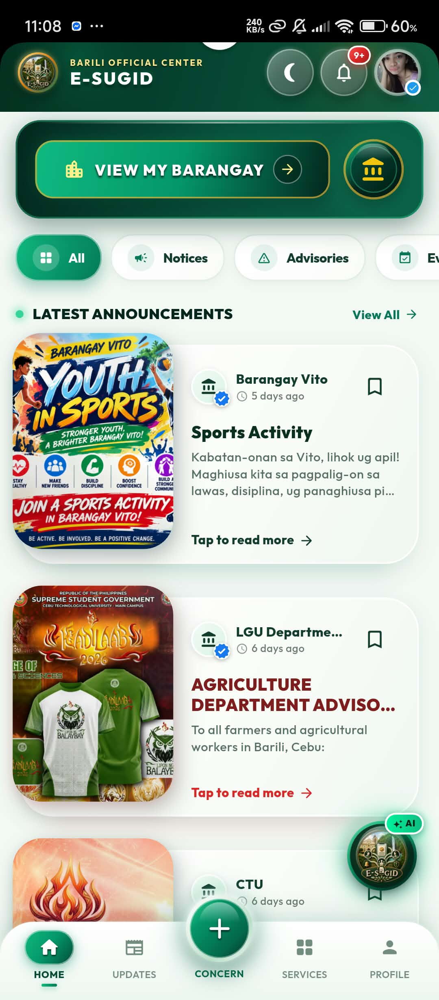

COMMUNITY, CONNECTED.
A small town.
A closer community.
Official updates. Voices heard. Everyday connections.
Discover a shared digital space for the people of Barili.
FLUTTER ANDROID APP + ROLE-BASED ADMIN DASHBOARD
01 / THE RESIDENT EXPERIENCEYour community.
Your community.
Within reach.
One Android app brings community information, resident concerns, and local services together.
01 — COMMUNITY HOME
A familiar place to find community announcements and discover what matters nearby.

ACTUAL APP INTERFACE DRAG TO ROTATE